![]()
Kerala Project Plant
After missing the bus on the way to a winery tour at Waiheke Island, I found myself chatting to a taxi driver about black soldier fly, organic waste, and sustainable protein. The driver turned out to be related to a large poultry producer in Kerala, India. I was introduced to Ashok John, owner of Summit Trades New Zealand, and six months later, I was on a plane to set-up the first black soldier fly waste treatment plant in India.
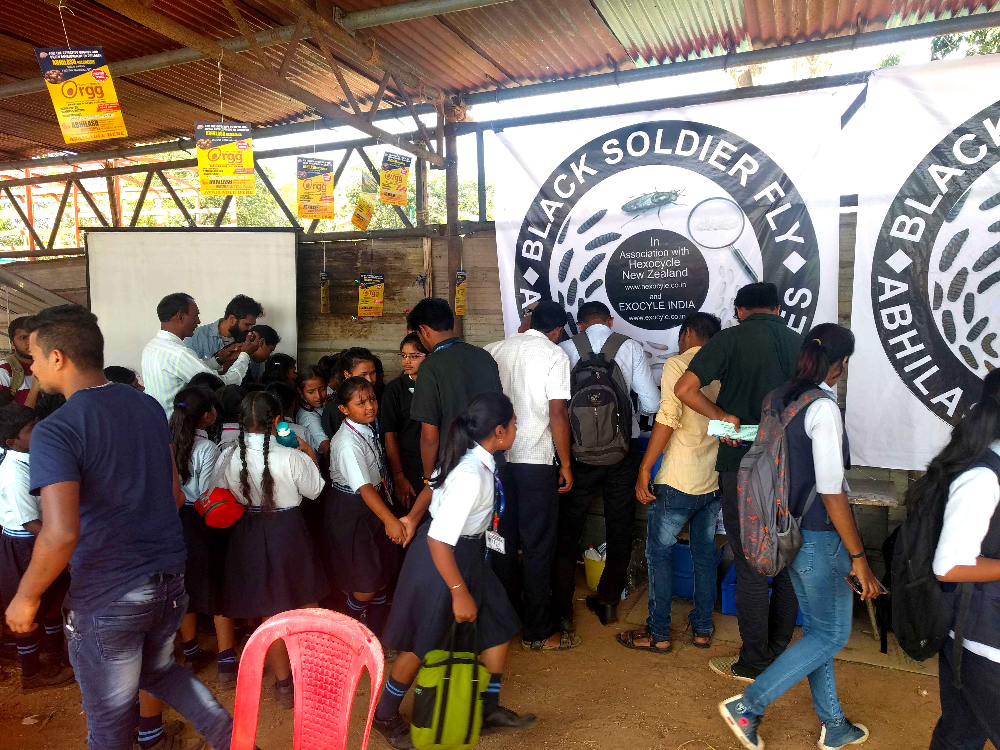
The pilot plant was to be situated at Abhilash Hatcheries, where the company produces fertilized chicken eggs for sale, in two old poultry sheds that were no longer being used.
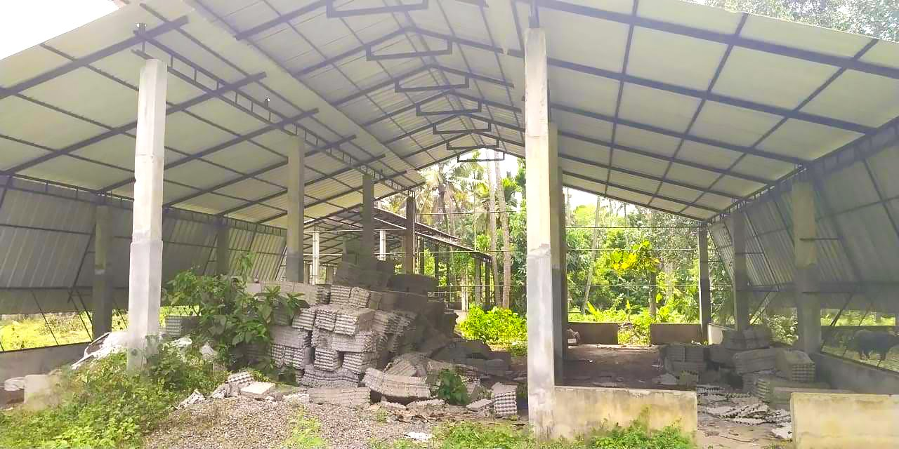
As I wouldn’t be able to stay and train workers on rearing black soldier fly and processing organic waste for a long period of time, I chose to design the plant around the SANDEC/Eawag model, which has excellent openly accessible documentation1. The pilot plant has the capacity to process 21 tonnes of organic waste a week. I drew up plans and sent these through to Abhilash Hatcheries, where construction began.
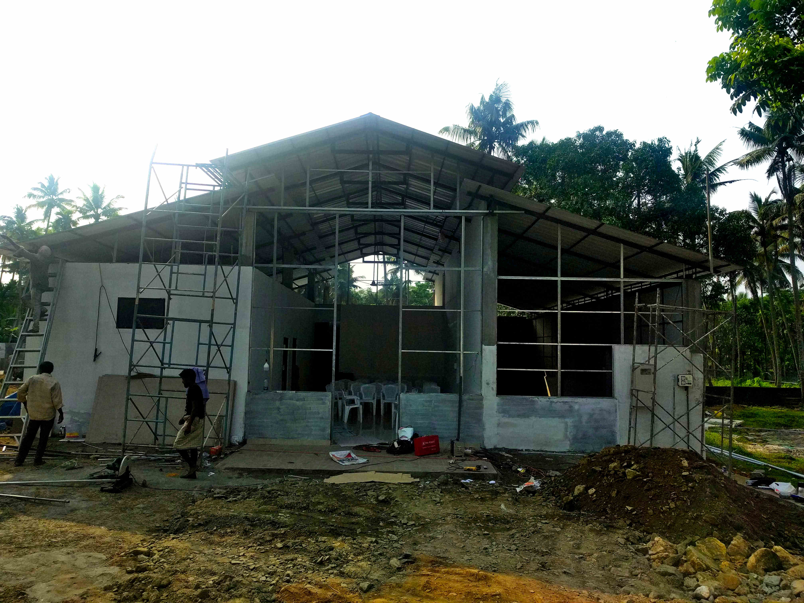
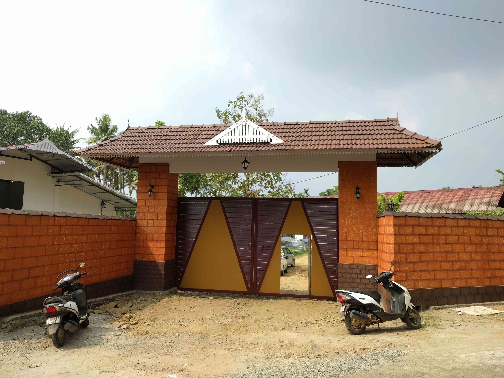
Construction of the facility. Photo: Neil Birrell, CC-BY
It was a fairly long flight from New Zealand, and on arrival, I was straight into it with a ceremony and presentation to the local priesthood. The area the pilot plant is based in is a majority Catholic community, so the pilot plant had to be blessed, followed by a big dinner.
Waste is a highly sensitive subject in Kerala and other states, with problems associated with waste such as odour, flies, and leachate being of particular concern to local citizens. There have been several waste management projects that haven’t worked, impacting the health and well-being of neighbours and causing an understandable distrust and suspicion from the community of new initiatives.
This meant ensuring there weren’t odour, vermin, or waste water issues through site design and training. For example, training technicians how to feed the correct quantity and depth of waste to larvae to minimize the risk of anoxic conditions that allow odour-causing bacteria to establish and ensuring high densities of BSF larvae to out compete pest flies. We initially did a pilot test on a pig farm on the outskirts of Kochi, which allowed us to test the design and train technicians before moving to the final site.
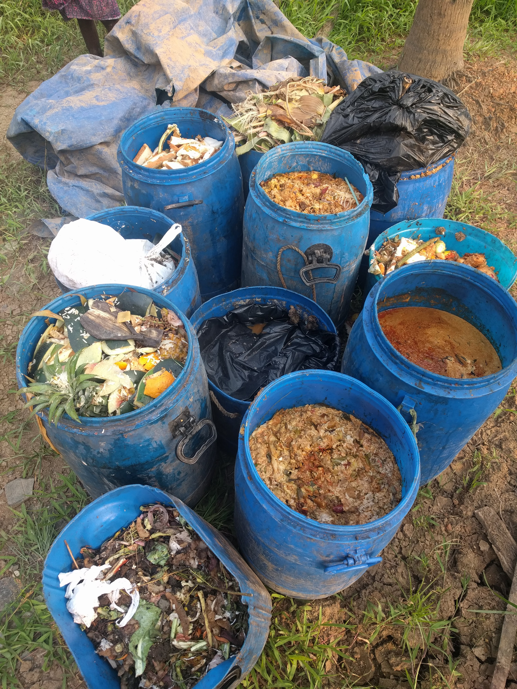
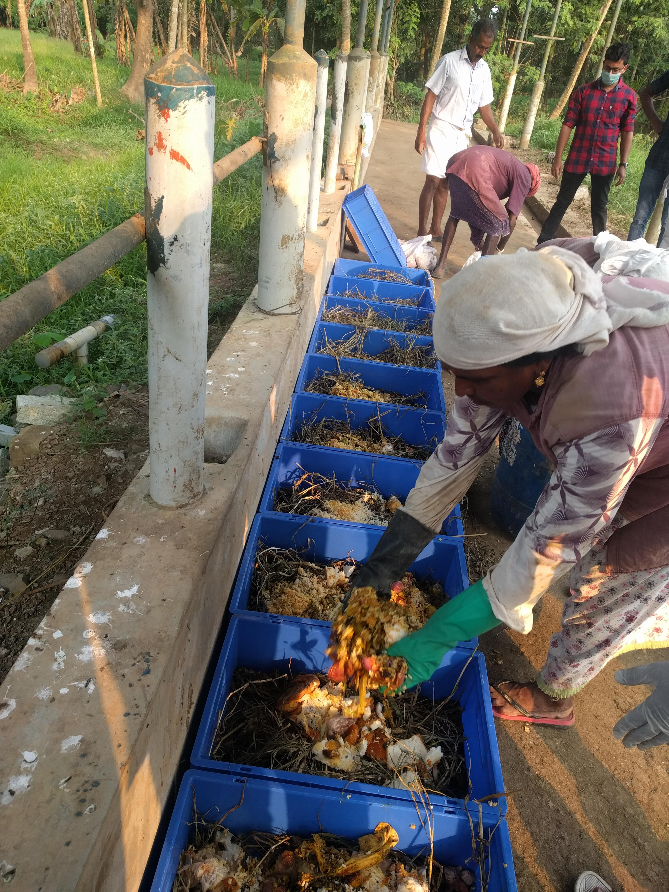
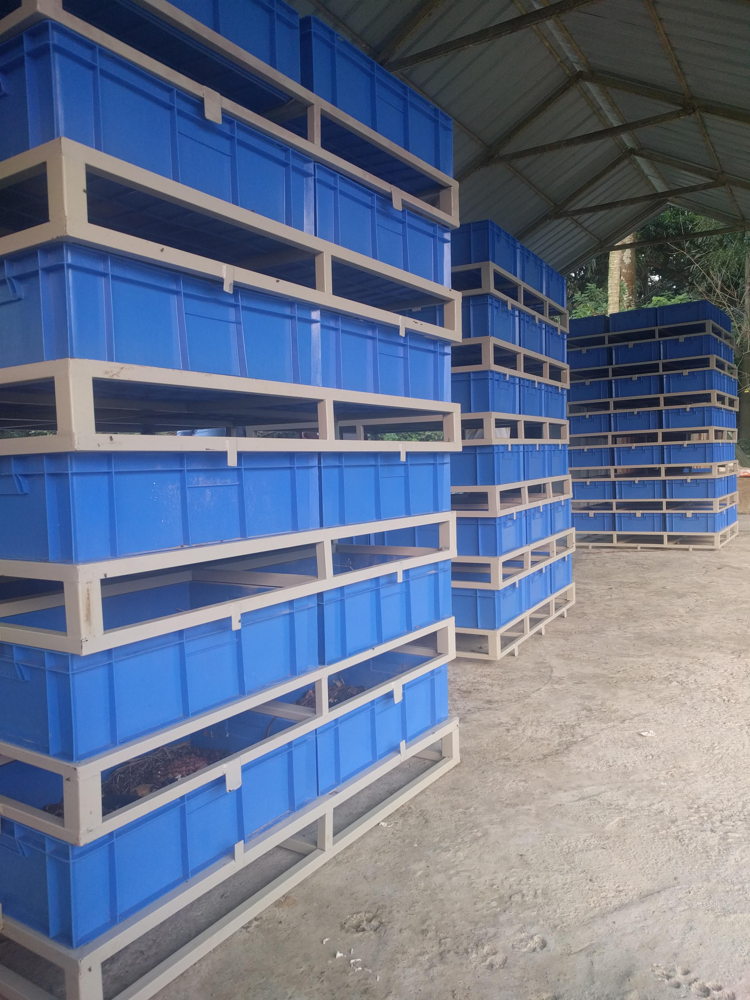
Photos: Neil Birrell, CC-BY
Unfortunately, the lack of an effective waste management infrastructure has led to the dumping of waste on roadsides and wetlands, which is a stark contrast to the beauty of the natural environment in Kerala. There is, however, a definite appetite for fixing this and a lot of interest from people in ways to reduce these issues.
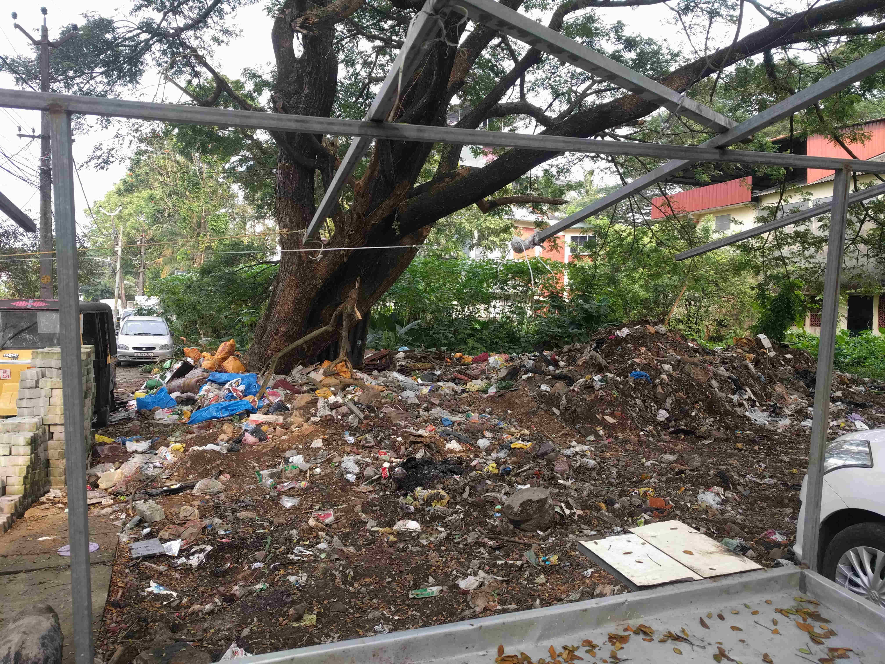
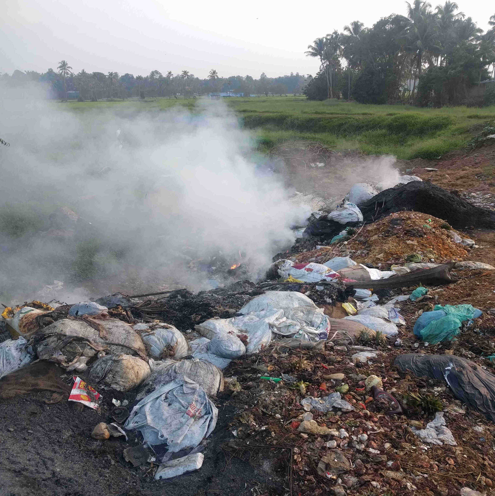
Examples of waste being dumped in urban and rural settings. Photos: Neil Birrell, CC-BY
As Abhilash Hatcheries also sells chickens for people to grow at home, either for eggs for their use or to sell to stores, the black soldier fly larvae can also be used as a source of protein for the chickens at a domestic scale, reducing feed costs for the family. Providing training for people to use black soldier fly larvae at home to reduce their organic waste is another possible option for future.
There were a number of things in India that are different to what I have experienced in New Zealand, for instance, lizards getting into the enclosures and eating the larvae. The question I was asked most was “Are you married?” followed by “Do you live with your parents?”. Another learning was the regulatory environment in India is complex and slightly Kafkaesque at times. Between this and the many language differences between each state, it would make it very difficult to do business if you aren’t a local. Having a strong partnership with a local company is really important. As a side note, stopping for masala chai (with plenty of jaggery) on the way to every meeting is standard, and being late to meetings seems to be expected - there seems to be a separate time zone called Kerala time.
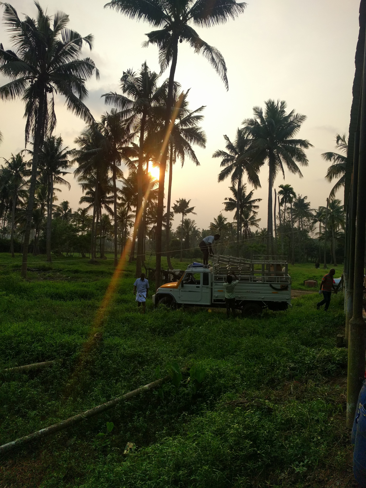
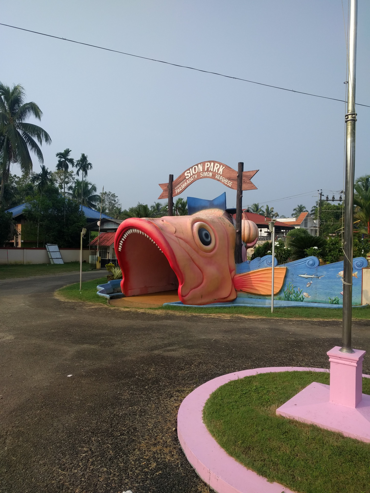
Kerala is a beautiful and unique place to visit. Photos: Neil Birrell, CC-BY
One of my favourite things from this project is I get to wake up to lots of strange photos such as newspaper clippings in different languages which have my picture in them but I haven’t the foggiest what they say.
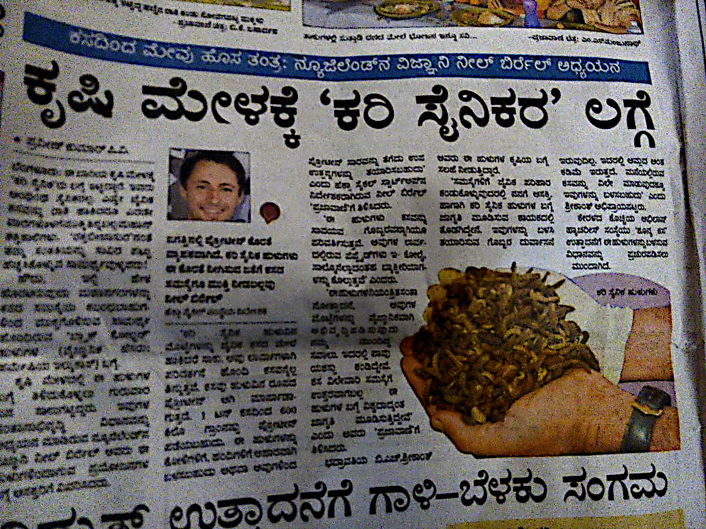
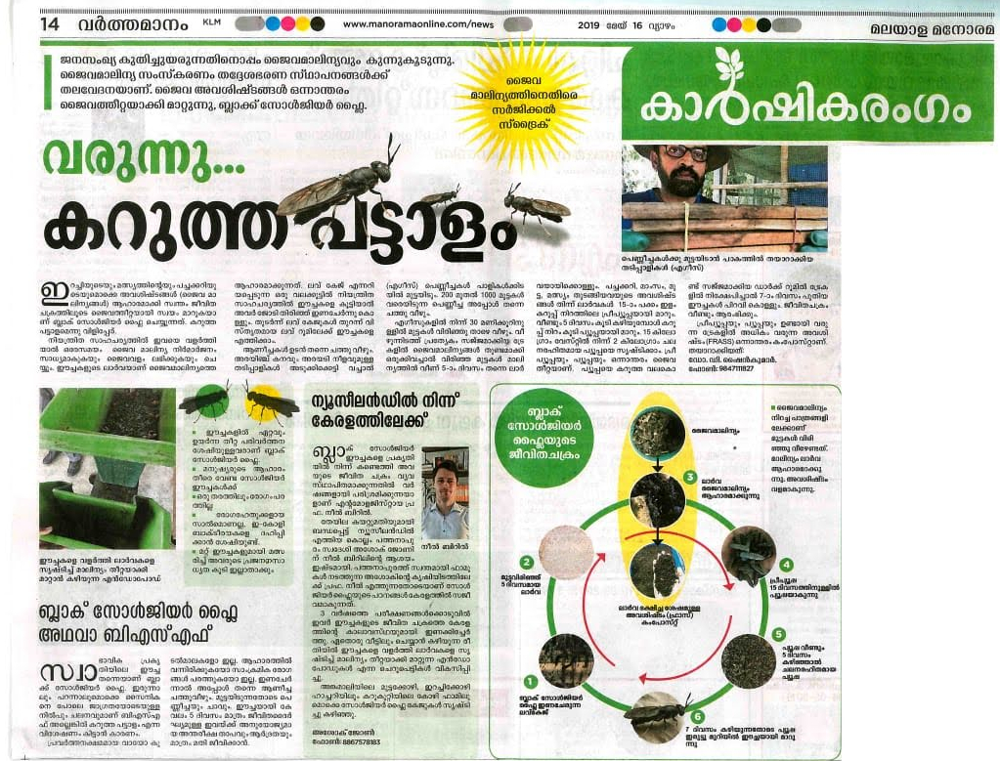
Newspaper clippings from the Kerala project. Photos: Neil Birrell, CC-BY
Blog Post: Kerala Project Plant, India by Neil Birrell (Hexacycle Limited) is licensed under a Creative Commons Attribution 4.0 International License.
Footnotes
If you are in a country with a tropical climate, and are interested in starting a business using black soldier fly, I would strongly recommend using this free resource. It will give you an idea of the work involved and the capital costs to set this up yourself.↩︎
Citation
@online{birrell2019,
author = {Birrell, Neil},
title = {Kerala {Project} {Plant}},
date = {2019-01-05},
url = {https://neilbirrell.com/posts/2019_05_01_kerala_bsf_plant/},
langid = {en}
}